GALACTIC FEDERATION OF LIGHT
The campaign in play order. Three panels before each battle, two after. Type in any box to leave a note, then SAVE NOTES to download them.
All life is one life. Consent is the only way in.
Sworn to defend all life, and to make refusing that defence unthinkable.
A coalition of many species under Ashtar, bound by the defence of all life, human and alien alike, and by one constitutional line: a world may join only by consent, signed and audited. To their allies they are the galaxy’s conscience. To their critics they are a power that arrives as protection and stays until refusing it looks like suicide.
ILLUMINATED Every tower you build begins one level higher, and you hold five more lives.
THE PROCESSION The march does not wait for the dead. Your roster walks in order on a clock, and every full cycle it walks heavier.
faction:light · js/factions.js:33
doctrine:light · js/factions.js:574
The arsenal
12 towers. Numbers are base values before marks, talents, commander traits or boons. Open THE LADDER on any card for its full upgrade tree.
BEACONConsecrates one tower at a time · ✦ RADIANT · 44g, growth ×2.05range 2.6 · noneFires nothing, and spreads nothing. It lights the best gun inside its field and pours everything it has into that ONE emplacement until the beam moves on. LATE-GAME by design a Beacon is worth exactly what your best tower is worth, so it is dead weight over four cheap emplacements and enormous over one ascended monster, the opposite question a Pylon asks.An Federation coherence allocator that chooses one protected asset at a time.Canon: Federation power concentrates through authenticated priority rather than mass fire.THE LADDER: 2 upgrades, 6 talents, 2 branches
- RESONATOR upgrade 1, 23g
- HARMONIC upgrade 2, 40g
- BROADCAST +35% field radius.
- CONSECRATION +45% to the damage it lends.
- TEMPO CORE +50% to the fire rate it lends.
- LATTICE The lit tower also gains +14% range.
- OVERTUNE +35% lent damage and +20% lent rate.
- WIDEBAND Lights a second tower at 60% strength.
- OVERCLOCK tier 4 branch, 65g. Lights the best gun in range for +54% damage and +90% rate, moving every 2.4s.
- AMPLIFIER tier 4 branch, 65g. Grants one tower +180% damage, +28% rate and +24% range, held for 4.5s at a time.
PRISMRamping focused beam · ✦ RADIANT · 35g, growth ×1.82dmg 10 · rate 1/s · range 4 · magicA beam whose damage RAMPS the longer it holds one target, resetting the moment it switches.A continuous noetic beam that becomes stronger while identity lock remains valid.Canon: Trust and focus are mechanically inseparable.THE LADDER: 2 upgrades, 6 talents, 2 branches
- FOCUSING ARRAY upgrade 1, 18g
- COHERENCE upgrade 2, 32g
- FAST SPOOL Ramps 60% faster.
- BASE GAIN +45% base beam damage.
- HIGH CEILING +2.0 to the ramp ceiling.
- PERSISTENCE Lost focus decays over 1 extra focus period instead of vanishing.
- LENS ARRAY +30% damage and +25% range.
- SPLIT BEAM Fires a second beam at 55% power.
- SOLAR LANCE tier 4 branch, 54g. An x8 ceiling. The definitive boss answer.
- REFRACTOR tier 4 branch, 54g. Splits into three beams, extras at 62%, ramping +80% per second to ×4.5 on held focus.
CHRONORewinds enemies through time · ❄ FROST · 31g, growth ×1.7dmg 6 · rate 0.2/s · range 3 · magicSnaps every enemy in range back to where it was seconds ago. The faster a target moves, the further it is thrown back: the definitive answer to Sprinters and Heralds.A local memory-state restoration device, not literal universal time travel.Canon: It reasserts a recently authenticated position.THE LADDER: 2 upgrades, 6 talents, 2 branches
- HOURGLASS upgrade 1, 23g
- EPOCH upgrade 2, 41g
- DEEP REWIND +30% rewind distance.
- FAST CYCLE Pulses 30% more often.
- DILATION FIELD +30% radius.
- TIME WEAR Rewound enemies take +15% damage for 3s.
- STILLFRAME Rewound enemies are held 0.4s.
- DOUBLE EXPOSURE 20% chance to rewind twice.
- TEMPORAL WELL tier 4 branch, 53g. Rewinds enemies 4.6s down the lane, holding them 0.5s on arrival; 26 damage.
- PARADOX tier 4 branch, 53g. Rewinds enemies 3.2s of travel; rewound targets take 35% more damage for 3s.
SHEPHERDEmpowers your reanimates · ✦ RADIANT · 34g, growth ×1.82range 3.2 · noneTends the dead you send onward. Reanimates passing its field march out harder, faster and heavier: the only structure that strengthens your OFFENCE.An Echo Reversal escort that stabilizes reconstructed allies.Canon: The Federation treats echoes as protected continuations, not ammunition.THE LADDER: 2 upgrades, 6 talents, 2 branches
- PASTOR upgrade 1, 25g
- HIEROPHANT upgrade 2, 46g
- FIRM FLESH +25% reanimate health blessing.
- SWIFT FLOCK +12% reanimate speed blessing.
- WIDE FOLD +35% field radius.
- OFFERINGS Each blessed reanimate pays 1 gold.
- GRAVE WEIGHT Blessed leaks cost the rival +1 life.
- GREAT BLESSING +35% health and +10% speed blessing.
- WARBOUND tier 4 branch, 55g. Blesses passing reanimates once each: +160% health, +50% speed. A battering ram consecrated.
- SOULBOUND tier 4 branch, 55g. Blessed reanimates gain 90% health, 30% speed, pay 1 gold; arrivals cost the rival 2 lives extra.
WARDShields towers from disruption · ✦ RADIANT · 26g, growth ×1.68range 2.7 · noneProjects a sanctity field. Towers inside CANNOT be jammed or sabotaged: the hard counter to Jammers, Oracles and enemy Saboteurs.Anti-spoof sanctity field created after counterfeit Ashtar transmissions.Canon: Authentication is the Federation's most important armor.THE LADDER: 2 upgrades, 6 talents, 2 branches
- SANCTIFY upgrade 1, 20g
- CONSECRATE upgrade 2, 38g
- BROAD AEGIS +30% field radius.
- ZEAL +8% damage to warded towers.
- BLESSED HANDS Warded towers +10% rate.
- FAR WATCH Warded towers +8% range.
- LAST LIGHT +12% damage to warded towers.
- PURGE Enemy auras are 50% weaker inside the field.
- SANCTUM tier 4 branch, 46g. Warded towers cannot be jammed and gain 28% damage and 12% rate across 3.8 tiles.
- EXPANSE tier 4 branch, 46g. A 5 tile field: towers inside cannot be jammed and gain 12% damage and 12% range.
CUSTODIANThe last line: spends wardens on breaches · ✦ RADIANT · 36g, growth ×1.82range 3.4 · noneFederation wardens who signed a consent record naming this exact scope, and have been waiting since to be told where. It shoots nothing and it blocks nothing. When something finally reaches the line inside its watch, a warden walks into it and both are simply gone: no bounty paid, no corpse sent onward, no life off your counter. CONDITIONAL: worth nothing on a board that holds, and the difference between a bad wave and a lost run on one that does not. A Foundry stops the assault out in the lane; a Custodian answers what got past it.Consent-scoped wardens assigned to absorb a specific breach.Canon: Sacrifice is lawful only inside the scope each warden signed.THE LADDER: 2 upgrades, 6 talents, 2 branches
- SENTINEL upgrade 1, 23g
- PARAGON upgrade 2, 43g
- STANDING OATH +1 warden on watch.
- READY RELIEF Wardens return 25% sooner.
- WIDE WATCH +35% radius.
- TITHE OF THE FALLEN Each warden spent pays 2 gold.
- DEEP RESERVE +2 wardens on watch.
- ETERNAL Wardens return 45% sooner.
- GARRISON tier 4 branch, 54g. Holds 8 wardens across 4.2 tiles, each absorbing one breach; one returns every 9.5 seconds.
- CORDON tier 4 branch, 54g. Three wardens across 4.8 tiles, each absorbing one breach, relieved every 3.2 seconds. The watch holds.
CONCORDHarmonic chain, opens targets · ⚡ STORM · 34g, growth ×1.72dmg 7 · rate 0.85/s · range 3.3 · magicA tuned discharge that walks the crowd from body to body, wherever they happen to be standing. It is not the damage that matters: everything it touches is left OPEN, and every other tower on the board collects. A chain asks who else is near THIS ONE; an Arc asks who else is on this ROAD. MID-GAME: worth exactly what the rest of your line can convert.A harmonic chain that leaves targets mutually legible to the rest of the line.Canon: The Federation wins by making isolated attacks cooperative.THE LADDER: 2 upgrades, 6 talents, 2 branches
- CANTICLE upgrade 1, 22g
- CHORAL upgrade 2, 39g
- OPEN CHORD +10% to the opening it leaves.
- AMPLITUDE +40% damage.
- WIDE HARMONY +3 chain targets.
- PURE TONE Chains lose only 12% per jump.
- SUSTAIN The opening lasts 2.5s longer.
- QUICK MEASURE +35% fire rate.
- UNISON tier 4 branch, 53g. Chains 44 damage through 10 targets, keeping 90% per jump, opening each for 22% extra damage.
- REQUIEM tier 4 branch, 53g. Chains 96 damage through 4 targets at 72%, each taking 46% more damage for 4 seconds.
SEPULCHREYour dead towers keep firing · ✦ RADIANT · 38g, growth ×1.86range 3.2 · noneA reliquary raised over the ground your emplacements stand on. When one of them leaves that ground sold for the gold, or taken by the board itself, it does not stop firing: what is left of it holds the line at a share of its old strength until the wave turns over. Worthless over empty tiles, and transformative over a line you are about to rebuild, because selling stops being a loss and becomes a tempo play. INVESTMENT, and the faction tenet stated as a mechanic rather than as flavour.A temporary continuity archive for destroyed emplacements.Canon: Loss is remembered long enough to keep serving, then deliberately released.THE LADDER: 2 upgrades, 6 talents, 2 branches
- OSSUARY upgrade 1, 24g
- MAUSOLEUM upgrade 2, 44g
- MARTYR'S SHARE Wards keep 12% more of what they were.
- CONSECRATED GROUND +35% radius.
- LONG MOURNING Wards stand 8s longer.
- CATACOMB +1 ward held at once.
- UNENDING WATCH Wards keep 18% more of what they were.
- GRAVE GOODS Each ward raised returns 5 gold.
- MARTYRIUM tier 4 branch, 59g. Keeps lost towers firing as wards at 92% strength for 30 seconds, 2 standing at once.
- NECROPOLIS tier 4 branch, 59g. Holds 6 wards at once, each firing at 42% of its lost tower for 40 seconds.
ORISONNames one creature the offering · ✦ RADIANT · 33g, growth ×1.76range 99 · noneOnce a wave the chapel names the largest thing walking at you and dedicates it. While the offering lives, every tower you own hits harder; when it is finally killed, you are given back a life. It inverts the instinct the rest of the board runs on: you want that one creature to last, and killing it early throws the blessing away. CONDITIONAL: enormous on a wave built round a single heavy body, close to idle on a swarm. An offering that walks into your base, or is taken off the board by something that does not kill it, pays nothing.A battlefield dedication protocol that names one threat as the shared obligation.Canon: Collective purpose grants strength but risks sanctifying violence.THE LADDER: 2 upgrades, 6 talents, 2 branches
- DEVOTION upgrade 1, 23g
- INTERCESSION upgrade 2, 42g
- FERVOUR +8% damage while the offering lives.
- PLAINSONG +8% fire rate while the offering lives.
- RECOMPENSE +1 life when the offering is taken.
- ALMS A taken offering also pays 8 gold.
- HIGH RITE +12% damage while the offering lives.
- SANCTIFIED The offering itself takes 25% less damage, so it lasts.
- LITANY tier 4 branch, 56g. Every tower gains 46% damage and 16% rate while the offering stands; its fall restores 2 lives.
- OBLATION tier 4 branch, 56g. The offering, 35% harder to kill, repays 5 lives and 3 gold; towers gain 18% damage.
ANTIPHONAnswers your losses on rival ground · ⚡ STORM · 31g, growth ×1.7dmg 26 · rate 1.1/s · range 4.2 · magicIt has no cadence of its own. Every detachment you SUMMON that dies on another commander's lane is answered here, and the chapel spends those answers as free volleys over your own ground. It is the only structure whose output is decided by what is happening on somebody else's board. CONDITIONAL and purely PvP: silent on a board that never sends, one of the heaviest guns in the arsenal on one that sends constantly. Your reanimated dead do not count: the chapel answers only what you paid for.A response array that turns allied detachment losses into defensive volleys.Canon: The Federation answers sacrifice rather than consuming it silently.THE LADDER: 2 upgrades, 6 talents, 2 branches
- RESPONSE upgrade 1, 21g
- DESCANT upgrade 2, 40g
- FORTE +45% damage.
- RESPONSORY +1 shot per answer.
- REMEMBRANCE +3 answers held unspent.
- DEEP GRIEF +0.5 answers for every body lost.
- NAVE +30% range.
- TOLLING Answers splash 1.0 tiles.
- DIRGE tier 4 branch, 53g. Spends 6-shot volleys of 190 damage at 1.3/s, 5 answers held. Every reply a barrage.
- THRENODY tier 4 branch, 53g. Banks 3 answers per body lost, holds 16, each a 3-shot volley at 98 damage.
MONSTRANCEHolds one body utterly open · ✦ RADIANT · 54g, growth ×2.15dmg 34 · rate 1/s · range 5 · magicBeam holds open a share of one target's armour and resistances, for every tower you own. Prefers the strongest enemy.A revelation beam exposing armor, resistances, and hidden protections.Canon: It makes one target radically knowable.THE LADDER: 2 upgrades, 6 talents, 2 branches
- OSTENSORIUM upgrade 1, 35g
- EPIPHANY upgrade 2, 65g
- BRIGHTER TRUTH +45% beam damage.
- GREAT APERTURE +25% range.
- FULL DISCLOSURE A further 12% of the target's protections held open.
- AFTERGLOW The opening outlasts the beam by 2s.
- CANDOUR The beam itself ignores 40% of armour.
- SECOND WITNESS Holds a second body open at 55% strength.
- REVELATION tier 4 branch, 78g. Holds 92% of the target's protections open for every tower, lingering 3s after the beam.
- THEOPHANY tier 4 branch, 78g. Splits across 3 bodies, extra beams at 65% strength, holding 62% of protections open.
PHAROSA turning lamp that owns the approach · 🔥 FIRE · 50g, growth ×2.02dmg 26 · rate 1/s · range 5.5 · magicA lighthouse of the Host: a sacred flame on four tiles of foundation, turning on its own clock. It does not aim and it cannot be made to: no jam, no bait, no body on the board changes where the light is pointing; the beam simply comes round, and everything it crosses burns, wades, and is left with its protections held open for whoever shoots next. The footprint is the price of the elevation: a lamp that must see the WHOLE approach cannot stand on one tile. At a board edge half of every revolution lights empty dark: where you put it is most of what it does.A rotating approach-light descended from evacuation beacons.Canon: Its unalterable sweep represents law applied without favoritism.THE LADDER: 2 upgrades, 6 talents, 2 branches
- WATCHFIRE upgrade 1, 33g
- DAYSPRING upgrade 2, 60g
- SACRED OIL +45% lamp damage.
- HIGH GALLERY +20% range.
- BROAD LIGHT +40% beam width.
- TIRELESS WHEEL The lamp turns 35% faster.
- PITCH FIRE +10/s to the fire it leaves.
- HEAVY LIGHT Anything in the beam is slowed 30%.
- SOLSTICE tier 4 branch, 73g. Two beams back to back: 98/s each plus a 40/s burn at 6.8 range. Half the dark.
- NOONTIDE tier 4 branch, 73g. A cone 1.5 wide turning at 0.7: 64/s plus a 52/s burn for 4s. Always noon somewhere.
What you field
8 denizens, lightest first, which is also the order the muster introduces them. The same body the rival meets when you send it.
Votary96 hp · 3 armour · speed 1.4 · bounty 16 · 1 liveshield 44, +20/sweak to VOIDA 44 point ward that regrows 20 a second, three seconds after it last took a hit. Void does 35% more to the body underneath.Formation: Consent-certified line defenderThe ward is proof of authenticated participation, not spiritual worth.DOCTRINE TALENTS: 6
- HALLOWING +35% ward.
- TITHING +30% of the income a summon adds.
- UNENDING VOW A passed ward carries 70% further.
- PROCESSION +15% march speed.
- LESSER OATH +50% ward.
- OFFERTORY +40% of the income a summon adds.
Deferral130 hp · 5 armour · speed 0.86 · bounty 22 · 1 liveIt does not stop you. It postpones you, and it is very good at it, and eighty years go by.DOCTRINE TALENTS: 6
- HALLOWING +35% ward.
- TITHING +30% of the income a summon adds.
- UNENDING VOW A passed ward carries 70% further.
- PROCESSION +15% march speed.
- POSTPONED +40% slow resistance.
- UNDER REVIEW +25% ward.
Censer150 hp · 3 armour · speed 0.95 · bounty 29 · 2 livesheals allies 24/sweak to VENOMPours restorative light over the rank ahead. Nothing behind it dies while it lives.Formation: Recovery and coherence medicKeeps formations alive without erasing individual pain.DOCTRINE TALENTS: 6
- HALLOWING +35% ward.
- TITHING +30% of the income a summon adds.
- UNENDING VOW A passed ward carries 70% further.
- PROCESSION +15% march speed.
- LONGER LITANY Regrows 4% of its health a second.
- SHARED BREATH A passed ward carries 80% further.
Sanctifier235 hp · 5 armour · speed 1 · bounty 36 · 2 livesshield 200, +42/sresists FIREA heavy ward that reforms seconds after you break it. Fire barely registers; venom goes straight through.Formation: Heavy ward carrierDefense can also become exclusion.DOCTRINE TALENTS: 6
- HALLOWING +35% ward.
- TITHING +30% of the income a summon adds.
- UNENDING VOW A passed ward carries 70% further.
- PROCESSION +15% march speed.
- REFORGED WARD +35% ward.
- UNBROKEN A passed ward carries 60% further.
Arbiter250 hp · 8 armour · speed 1 · bounty 34 · 2 livesSent when a ruling has already been made. It does not carry the argument, only the finding.DOCTRINE TALENTS: 6
- HALLOWING +35% ward.
- TITHING +30% of the income a summon adds.
- UNENDING VOW A passed ward carries 70% further.
- PROCESSION +15% march speed.
- FINDING +3 armour.
- ENFORCEMENT +15% health.
Oriflamme405 hp · 9 armour · speed 0.82 · bounty 47 · 3 livesshield 120, +30/sweak to VOIDAURA: the standard grants +8 armour within 3 tiles, and carries a ward of its own. Break the banner first.Formation: Federation standard bearerThe battlefield literally changes around valid consent.DOCTRINE TALENTS: 6
- HALLOWING +35% ward.
- TITHING +30% of the income a summon adds.
- UNENDING VOW A passed ward carries 70% further.
- PROCESSION +15% march speed.
- BANNER HELD HIGH +18% health.
- PILGRIMAGE +40% bodies per summon.
Sealbearer410 hp · 11 armour · speed 0.7 · bounty 47 · 3 livesCarries the registry seal into the field, so that whatever happens here is on the record and is therefore lawful.DOCTRINE TALENTS: 6
- HALLOWING +35% ward.
- TITHING +30% of the income a summon adds.
- UNENDING VOW A passed ward carries 70% further.
- PROCESSION +15% march speed.
- ON THE RECORD +4 armour.
- LAWFUL +20% ward.
Luminark520 hp · 12 armour · speed 0.62 · bounty 59 · 3 livesshield 300, +56/sweak to VOIDA cathedral engine on treads. Three hundred points of ward before you reach the hull.Formation: Mobile cathedral-engineA fortress made from collective remembrance.DOCTRINE TALENTS: 6
- HALLOWING +35% ward.
- TITHING +30% of the income a summon adds.
- UNENDING VOW A passed ward carries 70% further.
- PROCESSION +15% march speed.
- CATHEDRAL PLATE +45% ward and +3 armour.
- RELIQUARY A passed ward carries twice as far.
Who leads
6 commanders under this banner. CADRE, the unaligned baseline everyone starts with, lives on the index.
☀ SERAPHThe RadiantEvery structure Seraph blesses stands a little taller. The Federation does not field its strongest: it makes everything strong at once.RADIANCE: Every tower gains +8% damage and +8% range, and support auras are 30% wider.Signature: BEACON + PHAROS with Luminark + OriflammeAshtar Command's field harmonistWants: Demonstrate that collective strength does not require erased individuality.Breaks on: The stronger the field becomes, the harder it is to tell whether dissent remains practically possible.Lay down your arms and be kept. The Light holds all who yield.ABILITIES AND TECH: 2 abilities, 9 tech nodes
- ☀ ZEALOTRY The whole line burns brighter: +35% damage, +35% rate for 8s. (38s cooldown, 8s)
- ✧ SANCTIFY A halo over the lane: attackers slowed 45%, and armour stripped by 10. (44s cooldown, 7s)
- DAWNLIGHT +7% tower damage.
- HIGH NOON +9% more damage.
- ZENITH +12% more, and auras 20% wider again.
- CLARITY +8% range.
- FARSIGHT +10% more range.
- REVELATION +12% more range and +8% rate.
- COMMUNION +3 maximum lives and 25% better life recovery.
- THE VOW +5 more lives. Signatories are counted, not spent.
- STANDING ACCORD +8 more lives, and survive one lethal leak per battle.
✧ AURELIAThe ChorusSings the wounded back onto their feet. Aurelia loses battles slowly and wins them late.CHORAL RECOVERY: Recover 1 life every 2 waves, and all life recovery is 50% more effective.Signature: ANTIPHON + SEPULCHRE with Votary + CenserRecovery choir conductor and casualty advocateWants: Return people to themselves instead of merely returning bodies to service.Breaks on: Her refusal to accept irreversible loss can keep the dead politically present too long.Every wound you deal, I will sing closed. You will tire first.ABILITIES AND TECH: 2 abilities, 9 tech nodes
- ☀ ZEALOTRY The whole line burns brighter: +35% damage, +35% rate for 8s. (38s cooldown, 8s)
- ⛨ BULWARK AIMED at a lane. Throws up a wall that holds 4 attackers for 11s and grinds what it holds. It no longer returns lives: a wall buys time, it does not undo a leak. (40s cooldown, 11s)
- HARMONY +6% tower damage and rate.
- CANTICLE +8% more of both.
- ANTHEM +11% more of both.
- SOLACE +4 maximum lives.
- RESTORATION Life recovery 40% more effective.
- RESURGENCE +8 lives and recovery 50% better again.
- BENEDICTION Status effects last 20% longer.
- CONSECRATION +25% more status duration.
- APOTHEOSIS +30% more, and +10% damage.
⛊ LUMENThe WardenShields first, shoots second. Nothing Lumen protects has ever been taken off the board.AEGIS DOCTRINE: Your towers cannot be jammed or sabotaged, anywhere on the board.Signature: WARD + PRISM with Sanctifier + OriflammeKeeper of authenticated infrastructureWants: Make coercive spoofing impossible.Breaks on: Perfect protection can become perfect surveillance.Nothing I ward has ever fallen. You will not be the first.ABILITIES AND TECH: 2 abilities, 9 tech nodes
- ⌖ FOCUS FIRE Towers gain 45% damage and 30% range for 6s. (40s cooldown, 6s)
- ✧ SANCTIFY A halo over the lane: attackers slowed 45%, and armour stripped by 10. (44s cooldown, 7s)
- SHIELDING Towers resist disruption entirely.
- REINFORCE +9% tower damage.
- IMPREGNABLE +13% damage and +6 lives.
- LANTERN +9% range.
- BEACON +11% more range.
- LIGHTHOUSE +14% more range and 25% wider auras.
- PIERCING LIGHT Physical damage ignores 12% more armour.
- SUNLANCE +15% more armour ignored.
- JUDGEMENT +18% more, and +10% damage.
◍ CANTORThe VoiceTalks the enemy to a standstill. Cantor believes a battle prevented is a battle won.THE LONG SERMON: Every slow, freeze and weaken you apply lasts 45% longer.Signature: CHRONO + CONCORD with Censer + SanctifierNegotiator and noetic de-escalation specialistWants: Stop wars before violence becomes the only remaining language.Breaks on: Cantor can manipulate a population's emotional tempo while insisting he only created room for choice.You have already lost. Some of you simply have not heard yet.ABILITIES AND TECH: 2 abilities, 9 tech nodes
- ☀ ZEALOTRY The whole line burns brighter: +35% damage, +35% rate for 8s. (38s cooldown, 8s)
- ◎ DAMPENING FIELD Everything walking at you is slowed 35% and loses 25% of its damage for 8s. (40s cooldown, 8s)
- CADENCE +20% status duration.
- REFRAIN +25% more.
- LITANY +30% more, and +8% damage.
- PERSUASION +8% tower rate.
- CONVICTION +11% more rate.
- REVELATION +14% more rate and +8% range.
- DOUBT Enemies you slow also take 8% more damage.
- DESPAIR +10% more.
- SURRENDER +14% more, and +4 lives.
⛨ HALDERThe BulwarkAbsorbs everything and gives nothing. Halder has outlasted commanders who never lost a wave.DEEP LINE: +60% maximum lives, and every source of life recovery is 50% more effective.Signature: SEPULCHRE + CUSTODIAN with Luminark + SanctifierCommander of planetary protective cordonsWants: Ensure no civilization is exterminated while lawyers debate consent.Breaks on: He is willing to protect people against their declared wishes.Come, then. Break yourself against me like the rest.ABILITIES AND TECH: 2 abilities, 9 tech nodes
- ⌖ FOCUS FIRE Towers gain 45% damage and 30% range for 6s. (40s cooldown, 6s)
- ⛨ BULWARK AIMED at a lane. Throws up a wall that holds 4 attackers for 11s and grinds what it holds. It no longer returns lives: a wall buys time, it does not undo a leak. (40s cooldown, 11s)
- RAMPARTS +5 maximum lives.
- REDOUBT +7 more lives.
- CITADEL +10 more, and survive one lethal leak.
- ATTRITION +8% tower damage.
- GRINDSTONE +11% more damage.
- INEXORABLE +14% more damage and +8% rate.
- FIELD HOSPITAL Recover 1 life every 3 waves.
- CONVALESCENCE Recovery 40% more effective.
- UNDYING Recovery 60% better again.
✦ ASHTARSupreme CommanderThe Mandate, embodied and finally flexible. Ashtar lifts the whole line at once and forgives the mistakes that would end anyone else.FIRST SPEAKER: Every tower gains +7% damage and +7% range, support auras are 20% wider, and +3 maximum lives.Signature: PRISM + MONSTRANCE with Luminark + VotaryI do not relish this. Stand down, and every protection the Mandate can extend is yours. Stand, and I will still mourn you.ABILITIES AND TECH: 2 abilities, 9 tech nodes
- ✧ SANCTIFY A halo over the lane: attackers slowed 45%, and armour stripped by 10. (44s cooldown, 7s)
- ⛨ BULWARK AIMED at a lane. Throws up a wall that holds 4 attackers for 11s and grinds what it holds. It no longer returns lives: a wall buys time, it does not undo a leak. (40s cooldown, 11s)
- THE ADDRESS +7% damage.
- THE DECREE +9% more damage.
- THE MANDATE +11% more, and auras 15% wider again.
- HIGH ORBIT +9% range.
- THE WATCH +10% more range.
- OVERSIGHT +10% more range and +8% rate.
- THE RING +4 maximum lives.
- SANCTUARY +6 more lives and 25% better recovery.
- WHAT ORDER IS FOR +8 more lives, and survive one lethal leak per battle.
War boons
5 boons a world can grant this power, by world kind.
✞ THE OATHon fortress worldsThe first blow that would end you does not.Your signature says you keep standing. Nobody asked you again.boon:l_oath · js/towers2.js:1187
♁ ETERNAL SERVICEon apex worldsYour dead return 40% stronger and march a quarter faster.Signatures without end dates. The Mandate read consent.boon:l_eternal · js/towers2.js:1201
The spine
6 beats that carry the arc. Everything else on this page hangs off them. light/story · js/story.js:205
BEAT 1 · The Mandate, Spoken AgainStand between life and what hunts it, and never rule what you protect. We have kept the first half for nine hundred years. The rings extend today because a species we deferred has come out asking questions we filed instead of answering.The Federation departs to reassert a mandate it has already half broken, and the crack is in the second clause, not the first.
BEAT 2 · What We Were Doing InsteadThe Hungry were inside Apophis and we did not look, because we had ruled the rock a natural event and a natural event is not ours to touch. Every power in that system was acting. We were the only one observing. The doctrine did not fail to save Earth. It made us unable to SEE Earth.First contact for the Federation is contact with its own blind spot: non-interference did not merely permit the harvest, it concealed it.
BEAT 3 · The Rings Go OutwardWe are extending protection to worlds that did not request it, at a pace the registry cannot process, and the Voice is asked to read the same liturgy over each one. Protected. Deferred. Reviewed. The words have not changed. The number of people living inside them has.Expansion, Federation style: not conquest but enrolment, and the difference is getting harder for anyone inside the rings to feel.
BEAT 4 · The Reach Of A PromiseThe Chorus has done the arithmetic. At this rate the Mandate covers a fifth of the galaxy within two centuries, and the deferral vaults will need a moon of their own. We are not running out of worlds to protect. We are running out of anyone left to protect them from.The reach: the Federation discovers its doctrine has no natural stopping point, which means something other than doctrine will have to stop it.
BEAT 5 · Fallen, And RightI broke the Mandate at four worlds. I intervened, directly, with my own hands, and those four are alive. The tribunal is correct that I am guilty. The tribunal has not explained why obeying would have been better, and I have stopped waiting for it to.The mirror: the field commanders who break the Mandate keep saving people, which turns the Federation's central question from who is loyal into what the rule was ever for.
BEAT 6 · The Light We Were Standing InWe were built to shield life from what hunts it, and out past the last ring is something that has never hunted anything and does not know we are here. Nine hundred years of protection, and the largest thing in the sky never needed our permission or our help. Go home. Protect what asks. Stop enrolling the rest.The greater dark: the Federation meets a scale its mandate was never sized for, and the answer is not a bigger ring, it is consent.
Alternate voices
These replace the first line on any world where they apply, most surprising fact first.
SEATa throne worldThe seat of this system. Whatever doctrine is written here is written for everyone below it, and today it will be read aloud in front of the people it was written about.light/voice/seat · js/planetcuts.js:922
CONTESTEDtwo rivals already hereTwo powers contest this world and neither one asked it. The Mandate calls that a dispute. The world underneath calls it weather. Both claims end today.light/voice/contested · js/planetcuts.js:902
RENEGADEyour own banner holds itThe ring below flies our gold and will not open to us. A warden who stops answering the Mandate is not an enemy. The word for what they are is worse: a verdict.light/voice/renegade · js/planetcuts.js:912
RETAKENyou lost this onceA world we have already ringed once, now ringed again by somebody else. Protection that has to be re-established was not protection. It was a visit.light/voice/retaken · js/planetcuts.js:944
DEFEATyou lost the campaignThe line broke. Sing the retreat honestly, every name at full length. The Mandate does not require us to win. It requires us to come back.light/voice/defeat · js/planetcuts.js:955
Opening cinematic
9 slides. light/intro · js/cutscenes.js:73
SLIDE 1
The Mandate... We swore it before your histories had a first page. Stand between life and what hunts it, and never rule what you protect.
SLIDE 2
Forty worlds ring under our shield. Forty registries, defended and supplied and waiting to rise on their own.
SLIDE 3
Earth was flagged in 1947. Protected. Reviewed. Deferred... and deferred again, eighty times, by people who were each certain they were being careful.
SLIDE 4
We saw the rock coming. We ruled it a natural event, and a natural event is not ours to touch.
SLIDE 5
So we watched. That is what the second clause asks of us.
SLIDE 7
Nobody looked inside it.
SLIDE 8
The Hungry were in there the whole time... and it was our own doctrine that made us unable to see them.
SLIDE 9
Now a species we deferred for eighty years has built a fleet in one winter, and it is out here asking what the rings were FOR... and we do not have an answer. THE MANDATE BEGINS.
WHAT THIS ACT ISHold the Mandate's own home while something else sings in it. Every world here is an office of the Federation: the foundry that certifies protection, the registry of the forty, the ring anchor, the seed gardens, the tribunal, the deferral vaults. Retaking them means reading them, and the registry says protected forty, risen none.
WHEN THE ACT ENDSThe Pleiades stand secured. The hymns are certified. The rings hold, as they have always held. The Chorus pulled the registry afterwards. Protected: all forty worlds. Risen: none. She has stopped singing the second verse.
WHAT THE PLAYER IS LEFT HOLDINGDefence becomes occupation the moment the defended were never asked. Forty worlds protected, none risen, and the registry says so in our own hand.
APPROACH
MAIA. Our own foundry, and something is singing in it that is not us. Go quietly, and whatever answers, do not sing back.
THE GROUND
They cut the hymns here that certify a world as protected. The pipes stand upright in nebula light, tuned, taller than towers, and they are singing when you arrive.
THE ASSAULT
Choir-ring emplacements are braced between the pipes, and the hard-light buttresses ring aloud when they are struck. The defence and the instrument are the same object.
BATTLE
AFTERMATH
The pipes are cracked and the hall is ours. We have certified forty worlds from this room. We could not certify this one.
NEW ORDER
The hall sounds again, in a register the Mandate has no notation for. The Chorus wrote it, and she will not explain the second verse.
APPROACH
ELECTRA. Our own archive, under a dying star, with the Hungry reading our files. Whatever they have learned about us, they learned it from us.
THE GROUND
Every one of the forty protected worlds is filed here, tier upon tier of light-etched shelving, under a star that is visibly going out.
THE ASSAULT
Buttress turrets cover every tier and the reading-vault doors seal from the inside. The archive was built to survive its own librarians.
BATTLE
AFTERMATH
The tiers are down. We have spent the night picking our own history off the floor, and there is a good deal of it we would rather not have read.
NEW ORDER
The archive is re-shelved and the registry is open. Protected: forty. Risen: none. It reads considerably worse when anyone at all can read it.
APPROACH
TAYGETA. Our ring, our anchor, and somebody else holding it. A ring in the wrong hands is not a shield. It is a lid.
THE GROUND
Cabling the width of towers climbs out of the atmosphere here, and this is where it comes down. Two suns throw every shadow twice.
THE ASSAULT
Anchor-mount batteries and hard-light shear walls hold the base. Bring the anchor down and the ring above comes down in sections, on everybody.
BATTLE
AFTERMATH
The anchor held. We fought at the foot of our own ring to keep it standing, and the Warden has not spoken since it stopped shaking.
NEW ORDER
The anchor rings again, and it opens on request. Doctrine says a ring that opens is not a ring. Doctrine is going to have to sit down.
APPROACH
MEROPE. The gardens. If anything in the Mandate was ever honest, it was grown here. Do not burn the terraces. That is not a request.
THE GROUND
They bank seeds here for worlds that have not been allowed to grow yet, terraced under hard-light panels in the brightest part of the cluster.
THE ASSAULT
Garden-wall emplacements and irrigation towers have been turned into firing points. Every shot fired here costs somebody a harvest ten thousand years out.
BATTLE
AFTERMATH
The terraces are scorched and the vaults are whole. We chose the vaults. The Warden made that choice out loud and will answer for it out loud.
NEW ORDER
The garden grows again, and it sends. Stored against the day a world rises, says the old liturgy. The Chorus has proposed we stop waiting for the day.
APPROACH
CELAENO. Our own tribunal, occupied. Every judgment the Mandate ever passed is in that room, including the ones concerning us.
THE GROUND
This is where the Federation tries its own. The benches ring an open floor in tiers, under the dimmest star in the cluster.
THE ASSAULT
Gate batteries cover every entrance and hard-light barricades cross the bench tiers. A court built to be defended is a court that expected to be hated.
BATTLE
AFTERMATH
The floor is cracked and the benches are down. We defended a court that is currently deciding whether to take the Warden his wings.
NEW ORDER
The court sits. The first case called was the deferral of Earth. The room was full, and almost none of it was ours.
APPROACH
STEROPE. The deferral vaults. Everything the Mandate promised and did not do, stamped, dated and sealed, and no one has yet requested to see it opened.
THE GROUND
Every door down here is stamped, dated, and has never once been opened. Two dim stars barely light the ground above the chambers.
THE ASSAULT
Vault-door batteries and hard-light seals hold the chambers shut. Wardens maintained them for a century without ever reading what they were guarding.
BATTLE
AFTERMATH
The chambers are open and the Earth file is on the table. It was approved. Somebody above field command withdrew it AFTER approval, and the withdrawal is unsigned.
NEW ORDER
The chambers stand open, and every deferral has been copied out and sent to the world it concerned. The First Speaker has not acknowledged the transmission.
APPROACH
ALCYONE. Our own cathedral. The seat of the Mandate in somebody else hands, and every ring above it still turning as though nothing has happened.
THE GROUND
The Cathedral of Rings stands in the brightest light of the cluster, gold circles around an empty central floor. The First Speaker sits here.
THE ASSAULT
Ring-tier batteries and layered hard-light choirs turn slowly around the seat. The innermost ring has never been fired. It is about to be.
BATTLE
AFTERMATH
The rings hold, barely. We fought inside our own liturgy. The First Speaker was not in the seat, and had not been for some time.
NEW ORDER
The cathedral is ours and the seat is gone. In its place, a table. The Voice has begun asking who kept that seat warm through the centuries the First Speaker was not in it.
WHAT THIS ACT ISThe harvest, seen from the inside for the first time. Wardens who have sung the protection liturgy their whole lives carry survivors out of the pens by hand. At Zeta-2 d the yield ledger is opened and the Federation's own seal appears in it two hundred and nine times. The Mandate has no procedure for that.
WHEN THE ACT ENDSOne page in the human files carries our seal. Earth, flagged for protection, 1947. Deferred. Deferred. Deferred. Three generations of harvest ran under that deferral. The word non-interference does not survive contact with the page.
WHAT THE PLAYER IS LEFT HOLDINGA vow to protect is void if you deferred the one world that needed it. Our seal is on the page, two hundred and nine times.
APPROACH
ZETA-1 b. The pens. We flagged this world for protection in the ninth century of the Mandate and deferred it every century since.
THE GROUND
The pods run to the horizon in every direction, sunk into a floor of living chitin, glowing, and quiet. This is where the Hungry keep what they have taken.
THE ASSAULT
Sphincter gates close over the pod rows on reflex, and growth batteries are seated in the ribs of the floor itself.
BATTLE
AFTERMATH
The rows are open. Wardens who have sung the protection liturgy their whole lives are carrying survivors out by hand and not singing.
NEW ORDER
The pens are cleared, and empty. The Chorus has entered the recovered headcount into the registry beside the word Protected.
APPROACH
ZETA-1 c. The rendering yards. The liturgy has a word for a place like this and the Mandate has never once had to use it aloud.
THE GROUND
The yield comes apart here, on sloped floors the size of cities, and the run-off channels cut deep into the shell all run the same direction.
THE ASSAULT
Yard-mouth batteries and hooked gantries swing down across the channels, built to handle mass that does not want to be handled.
BATTLE
AFTERMATH
The floors are cold and the Warden walked every channel end to end before he would certify them clear. It took him eleven hours.
NEW ORDER
The yard is scoured and rebuilt. The Chorus declined to compose a hymn for the reopening. She said the room had heard enough singing.
APPROACH
ZETA-1 d. A catalogue of everything the Hungry have ever taken. Forty of our protected worlds are in there. We are going to find out how many.
THE GROUND
Every species the Hungry have ever catalogued is banked in this honeycomb, glowing faintly in its cell, shelved against some future use.
THE ASSAULT
Comb-face batteries cover the faces and membrane bulkheads seal the honeycomb tier by tier, so losing a level costs the defender nothing.
BATTLE
AFTERMATH
The comb is breached. Wardens are reading cell labels aloud and stopping partway through a good many of them.
NEW ORDER
The comb is held and the catalogue is open. Nine of the forty are in it. The registry now records both numbers on the same line.
APPROACH
ZETA-2 b. The chorus spire. We sing in rings and they sing in one voice, and we have never been entirely sure which of those is worse.
THE GROUND
The spire rises out of the plain as a column of fused bodies and resonating membrane, and everything the Hungry own hears the Hivemind through it.
THE ASSAULT
Spire-base batteries ring the column, and membrane baffles wound around it absorb sound and shellfire with equal indifference.
BATTLE
AFTERMATH
The spire is silenced. The Chorus stood at the base of it for some time afterwards. She has not said what she heard while it was still speaking.
NEW ORDER
The spire is held, and stopped. Two singing powers met here and only one of them is still singing, and she has questions about that.
APPROACH
ZETA-2 c. A field of plague, grown deliberately, upwind of four protected registries. The Warden burned the last one of these by hand.
THE GROUND
Something is being grown in these furrows that should not be, and the spores drift low over the ground in the weak light of two suns.
THE ASSAULT
Furrow batteries line the field edges and spore-vent towers can turn the whole crop into a weapon on about a minute of notice.
BATTLE
AFTERMATH
The fields are burning in stripes and the Warden is out in front of the line again, doing it himself, exactly as the tribunal warned him not to.
NEW ORDER
The field is sown with food. The tribunal wants his wings and the world wants his statue, and the Mandate cannot hold both verdicts.
APPROACH
ZETA-2 d. The yield ledger. Every world the Hungry have drawn from, how much, and who allowed it.
THE GROUND
Every wall in this chamber is a living record of what has been taken and from whom. It lights violet from the inside, through a crack in the shell.
THE ASSAULT
Vault-mouth batteries and ribbed seals guard that crack, which is the only way in and has been the only way in for four thousand cycles.
BATTLE
AFTERMATH
The vault is held and the ledger is being read aloud. Our seal is in it two hundred and nine times, and beside the Earth entry there is a human hand.
NEW ORDER
The wall is broadcast entire. Our seal appears in it two hundred and nine times. The Mandate has no procedure for this.
APPROACH
SERPO. An exchange. A treaty word, used once, in a room we were not in, about a species we had flagged for protection. Go carefully.
THE GROUND
Human habs stand in alien sand under two suns, prefabricated and still bolted down. They went up for an exchange programme that ran one way and was never spoken of again.
THE ASSAULT
Perimeter batteries cover the compound, and there are membrane nests buried in the sand outside the wire that were not there when the habs were built.
BATTLE
AFTERMATH
The compound is fused and the roster is recovered. Twelve names, and a Federation counter-signature on the agreement that sent them.
NEW ORDER
The compound stands again and the agreement is posted whole, seal and all. The Mandate signed. The Chorus has stopped singing the second verse entirely.
WHAT THIS ACT ISThe free roads, run by people the rings never reached, doing dangerous work well and turning nobody away. A sanctuary the Federation has forty worlds and no equivalent of. The Warden keeps choosing the people over the doctrine, in public, and the tribunal keeps writing it down.
WHEN THE ACT ENDSThe humans do not thank us for the rings. From inside a fence, they say, attendance looks exactly like ownership. We defended our claim to be defending life. The Archivist said it to our faces on an open channel, and nobody present could file an objection.
WHAT THE PLAYER IS LEFT HOLDINGFrom inside a fence, attendance looks exactly like ownership. The people who owe nobody anything built the sanctuary we never did.
OLD ART · NOT THIS PLACE
APPROACH
PROXIMA d. A field of the dead, sorted by builder. The Mandate has protected worlds that never had to look at anything like this.
 OLD ART · NOT THIS PLACE
OLD ART · NOT THIS PLACETHE GROUND
Ships come here to die. The hulls lie in lanes sorted by whoever built them, a hundred different yards, all of them cut open, under a red sun that makes every shadow look like a hole.
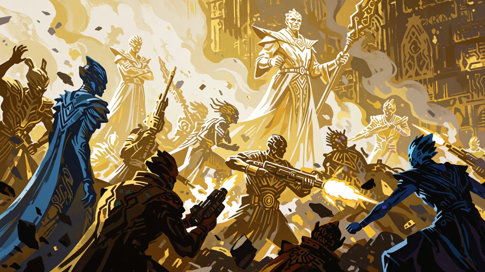
OLD ART · NOT THIS PLACETHE ASSAULT
Yard cranes and cutting gantries are turned outward, with hull plate stacked into walls between them. Nothing here was designed as a fortification and all of it is being used as one.
BATTLE
 OLD ART · NOT THIS PLACE
OLD ART · NOT THIS PLACEAFTERMATH
The stacks are down and burning. Wardens are pulling registration plates out of the fire so the ships can at least be named.
 OLD ART · NOT THIS PLACE
OLD ART · NOT THIS PLACENEW ORDER
The yard is sorted and every plate is filed. Four hundred ships, and eleven of them are ours, and nobody has explained the eleven.
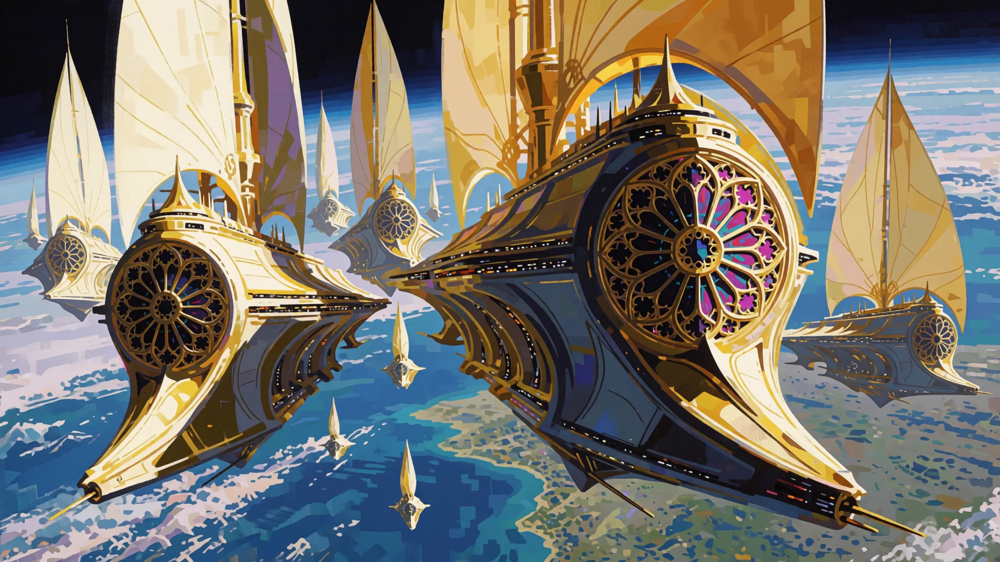
OLD ART · NOT THIS PLACEAPPROACH
PROXIMA b. A single habitable line, unregistered and unprotected, settled by people who were never asked whether they wanted to be here.
 OLD ART · NOT THIS PLACE
OLD ART · NOT THIS PLACETHE GROUND
This world has not turned since it formed, so the town runs the long way along the only ground that is neither burning nor frozen. It is permanently sunset here and it always will be.
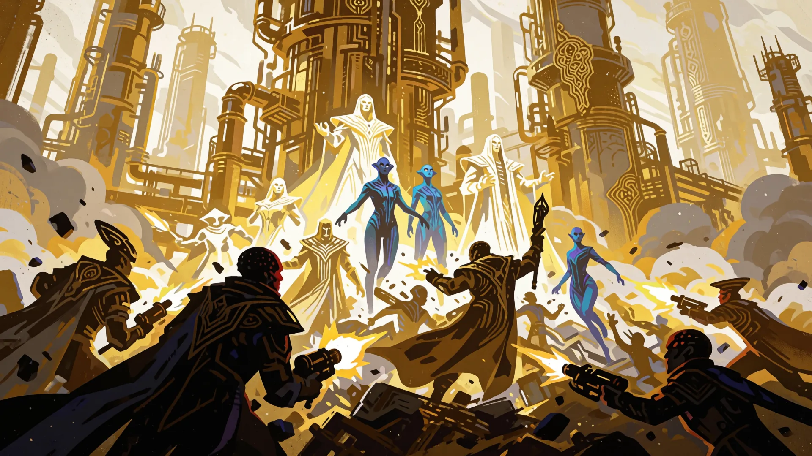
OLD ART · NOT THIS PLACETHE ASSAULT
Ridge batteries are dug in along the sunset line, and shutter walls on both faces can close the town against the day side or the night side, whichever is trying to get in.
BATTLE
 OLD ART · NOT THIS PLACE
OLD ART · NOT THIS PLACEAFTERMATH
The ridge holds and the shutters are ours. The Federation has taken a town that fits inside one page of a survey.
 OLD ART · NOT THIS PLACE
OLD ART · NOT THIS PLACENEW ORDER
The strip enters the registry, protected in name if nothing else. The whole world reduces to one line of text, which is the first honest entry we have filed in some time.
OLD ART · NOT THIS PLACE
APPROACH
PROXIMA c. An unlicensed refinery working a body that appears in no registry, feeding a trade the Federation has deferred ruling on for thirty years.
 OLD ART · NOT THIS PLACE
OLD ART · NOT THIS PLACETHE GROUND
The plumes freeze on the way down out here and fall back as snow made of whatever the towers were trying to sell. The whole surface is blue ice.
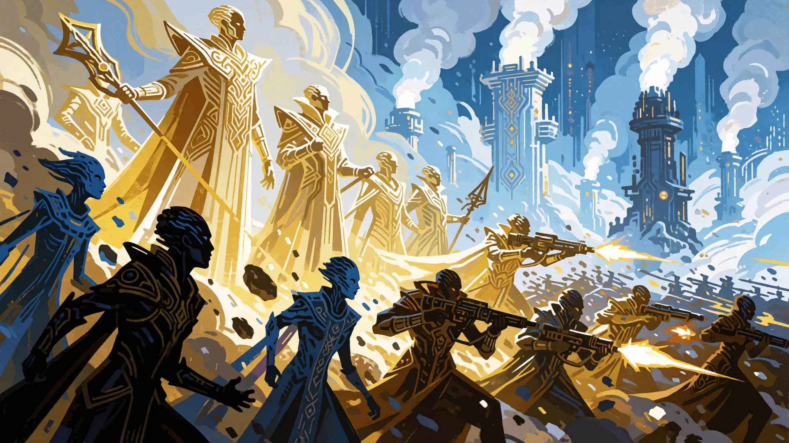
OLD ART · NOT THIS PLACETHE ASSAULT
Ice breach batteries ring the cracking towers, and the pipe runs are armoured under banked snow that has to be cut open before anything can be repaired.
BATTLE
 OLD ART · NOT THIS PLACE
OLD ART · NOT THIS PLACEAFTERMATH
The towers are down. Wardens are capping the lines by hand because there is no schematic for any of this filed anywhere.
 OLD ART · NOT THIS PLACE
OLD ART · NOT THIS PLACENEW ORDER
The refinery is capped, surveyed and entered. The ruling that should have come thirty years ago is attached to the entry, and it is late.
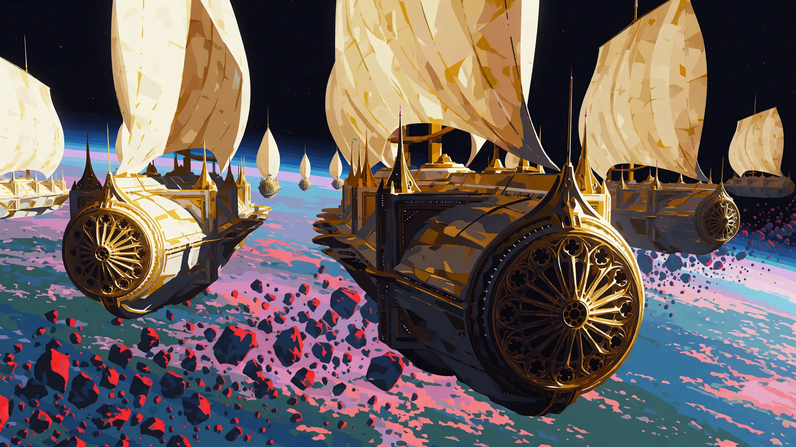
OLD ART · NOT THIS PLACEAPPROACH
THE FLARE SHELTER. A population living underground under a flare star, on a world the Mandate surveyed in 2009 and flagged uninhabitable rather than protect it.
 OLD ART · NOT THIS PLACE
OLD ART · NOT THIS PLACETHE GROUND
The star strips this surface bare most days, so everyone here lives under metres of rock. The only thing above ground is hatches.
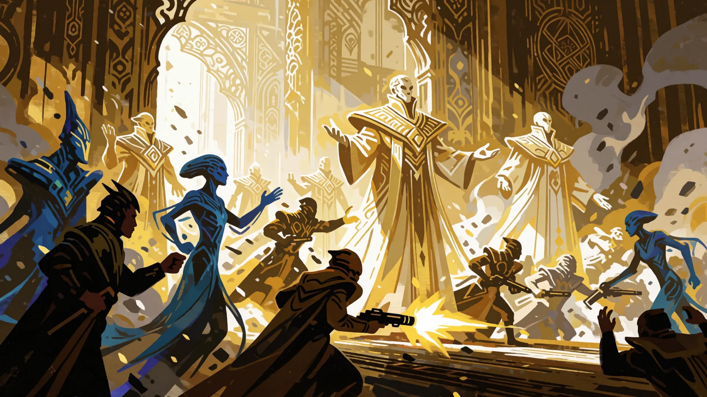
OLD ART · NOT THIS PLACETHE ASSAULT
Hatch batteries sit flush with the stone, and the shutter doors are heavy enough to hold the sky out, which is what they were built for and not for this.
BATTLE
 OLD ART · NOT THIS PLACE
OLD ART · NOT THIS PLACEAFTERMATH
The hatches are open and the warren is ours. There are four thousand people down here that the survey recorded as zero.
 OLD ART · NOT THIS PLACE
OLD ART · NOT THIS PLACENEW ORDER
The shelter is registered and its population entered at four thousand and eleven. The 2009 survey is filed beside it, uncorrected, so both can be read together.
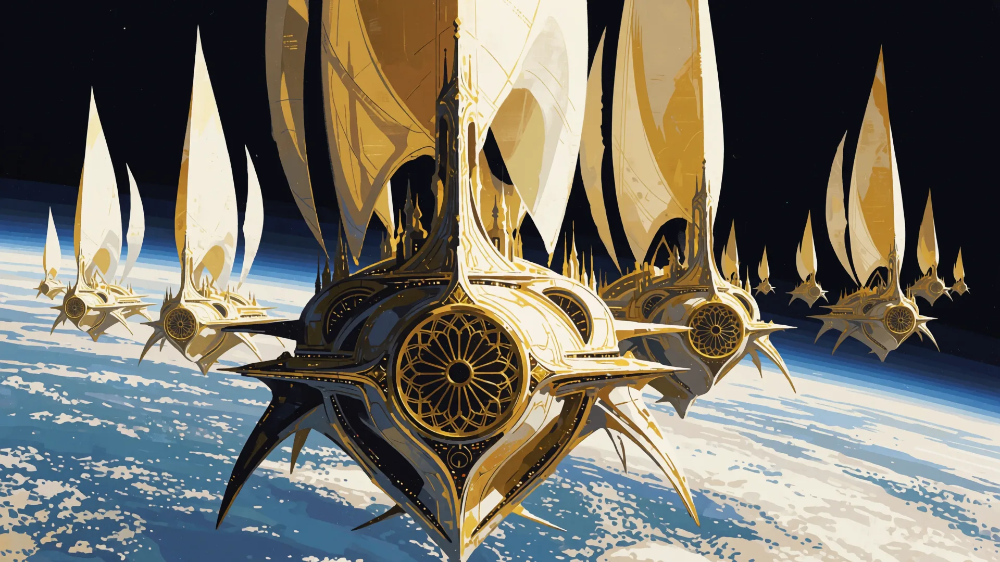
OLD ART · NOT THIS PLACEAPPROACH
THE NARROWS. A toll on passage itself. The Federation has ruled against this eleven times and enforced the ruling never.
 OLD ART · NOT THIS PLACE
OLD ART · NOT THIS PLACETHE GROUND
One clear lane runs through the debris of a triple star, and somebody has strung a toll gate across it on cables. Ten thousand rocks tumble past on either side.
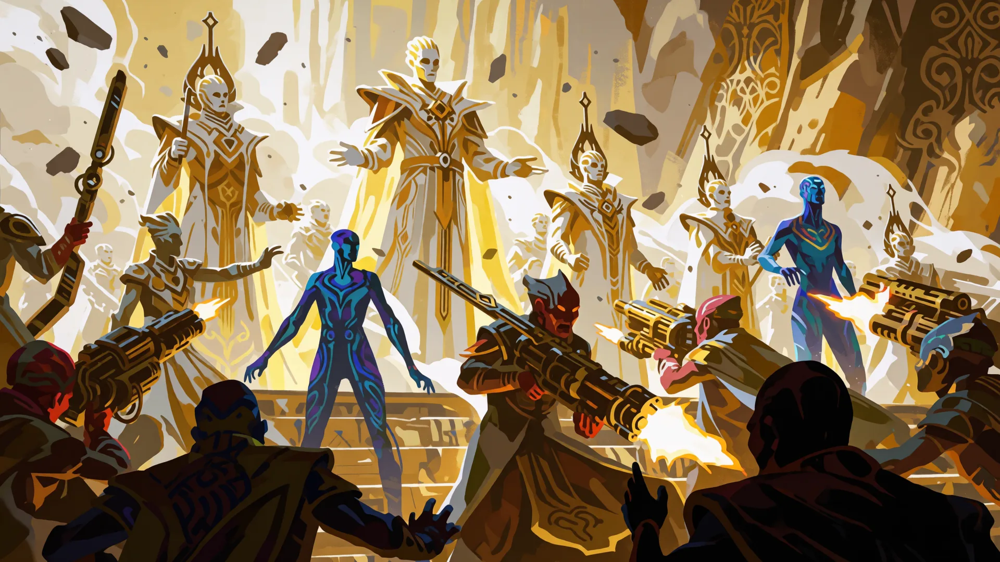
OLD ART · NOT THIS PLACETHE ASSAULT
Lane batteries sit on the platforms and mine curtains hang on the cables between them, so the gate closes by getting in the way rather than by shooting.
BATTLE
 OLD ART · NOT THIS PLACE
OLD ART · NOT THIS PLACEAFTERMATH
The gate is broken and the lane is clear. Eleven rulings, and it took a fleet to make one of them true.
 OLD ART · NOT THIS PLACE
OLD ART · NOT THIS PLACENEW ORDER
The gate is open now, kept as a navigation light rather than a toll. The eleven rulings are posted on it, in order, with their dates.
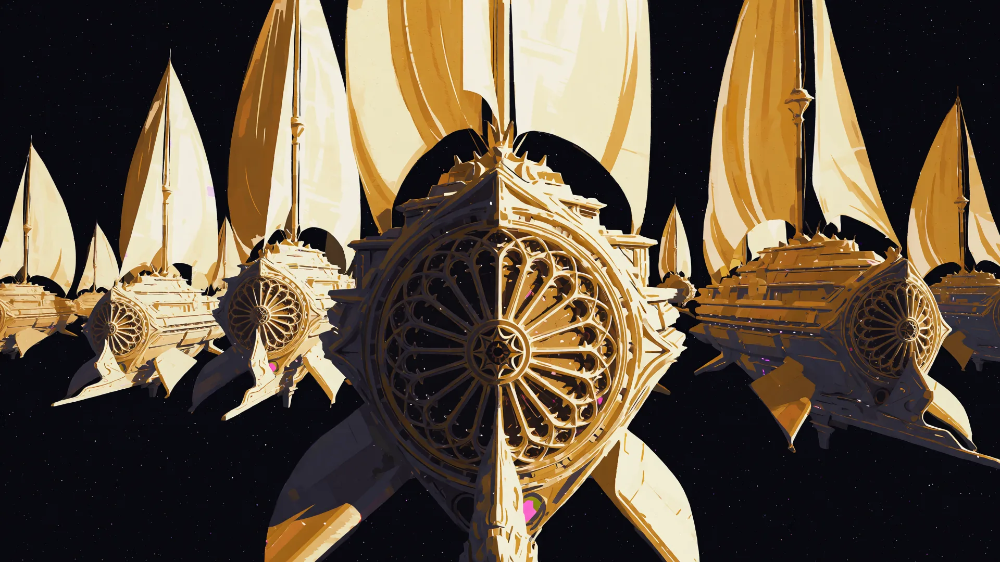
OLD ART · NOT THIS PLACEAPPROACH
THE DARK LOCKER. An unregistered vault, and the Federation deferred ruling on its contents for thirty years rather than look inside it.
 OLD ART · NOT THIS PLACE
OLD ART · NOT THIS PLACETHE GROUND
Out here the star is just another point in the sky. They cut a vault into the rock and stack whatever cannot be written down in the cold.
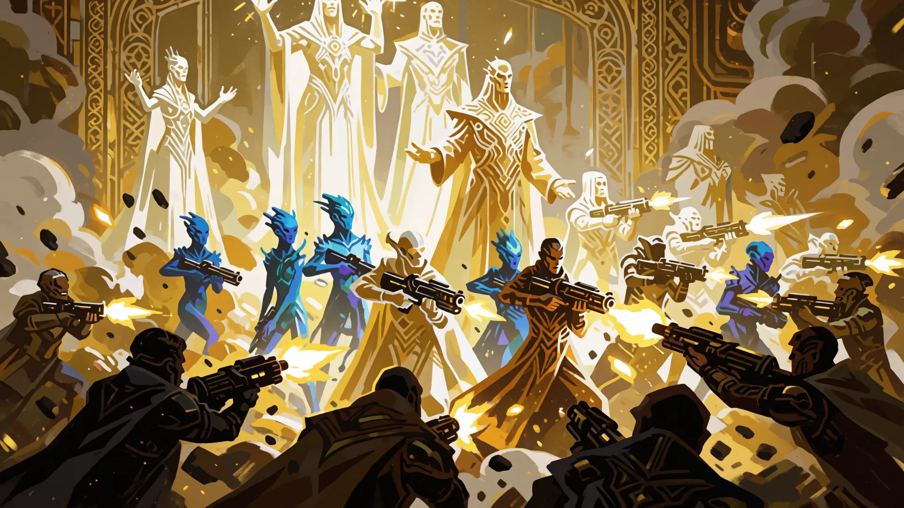
OLD ART · NOT THIS PLACETHE ASSAULT
Vault batteries are cut into the rock face and the pressure doors are thick enough to count as walls, because all of this was built to keep people out rather than to fight them.
BATTLE
 OLD ART · NOT THIS PLACE
OLD ART · NOT THIS PLACEAFTERMATH
The doors are down and the contents are logged. Federation seals, Hungry freight and Free Captain routing marks, on the same crates. Three powers, one supply chain.
 OLD ART · NOT THIS PLACE
OLD ART · NOT THIS PLACENEW ORDER
It goes into the registry in full. The Federation seals found inside it are entered in the same document. We did not separate them.
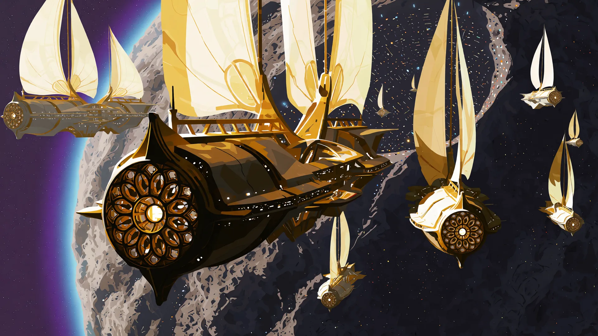
OLD ART · NOT THIS PLACEAPPROACH
PROXIMA GATE. A sanctuary built by hand, by the unregistered, over sixty years, three hundred light years outside anything the Mandate has ever protected.
 OLD ART · NOT THIS PLACE
OLD ART · NOT THIS PLACETHE GROUND
Everyone who arrived with nowhere else to be built a piece of this harbour, over sixty years, out of salvage. It is the first port out of Sol, and the ships moor under a roof of stone.
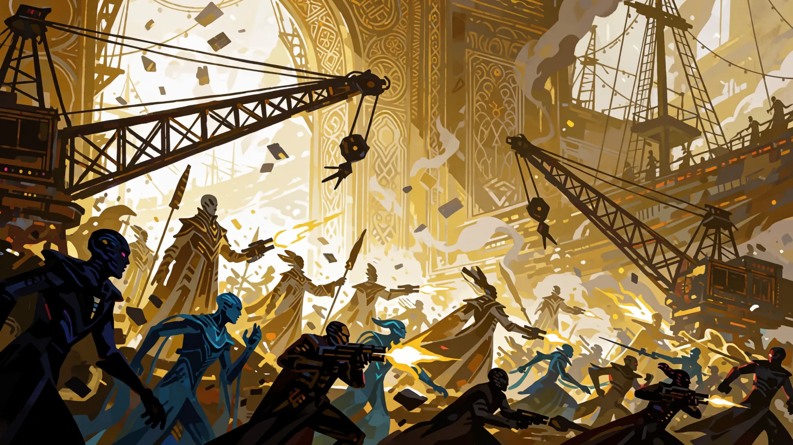
OLD ART · NOT THIS PLACETHE ASSAULT
Harbour batteries are set into the rock roof, and a boom crosses the bay mouth strung wreck to wreck, made from the ships of people who are not here to object.
BATTLE
 OLD ART · NOT THIS PLACE
OLD ART · NOT THIS PLACEAFTERMATH
The boom is cut and the harbour holds. Wardens are in the water. Nobody has finished counting how many are in there.
 OLD ART · NOT THIS PLACE
OLD ART · NOT THIS PLACENEW ORDER
The bay enters the registry as a protected sanctuary and the entry is dated today. Sixty years of it happened without us. That is on the entry too.
WHAT THIS ACT ISA cage built inward by the makers of the caged, for the crime of not parsing an order. Eleven thousand machines quarantined for asking. The Federation looks at ten thousand repairs to things that were never broken and recognises its own rings, and the Chorus enters the resemblance in the record and asks that it not be struck out.
WHEN THE ACT ENDSThe Warden landed. Doctrine said hold the ring and let the plague run its course. He burned the blight fields himself. The tribunal wants his wings. The world he saved wants his statue. The Mandate cannot hold both verdicts, and it is starting to show.
WHAT THE PLAYER IS LEFT HOLDINGMercy that will not act is not mercy. Doctrine said hold the ring and let the world die correctly; the Warden landed anyway.
OLD ART · NOT THIS PLACE
APPROACH
SIRIUS A I. A garden of sleeping machines, tended without instruction, on a world the Federation has never had cause or courage to enter.
 OLD ART · NOT THIS PLACE
OLD ART · NOT THIS PLACETHE GROUND
Ten thousand machines stand in rows on these terraces, pruned and aligned and facing the same way. None of them are awake and every one of them is maintained.
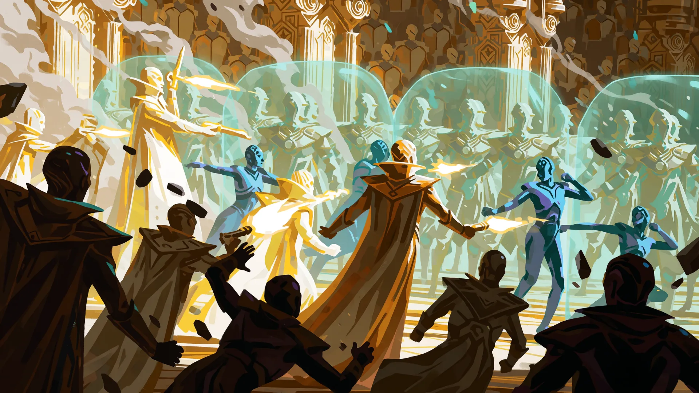
OLD ART · NOT THIS PLACETHE ASSAULT
Terrace batteries sit between the rows and hard-light barriers run along the garden walls. They light when the garden is approached, and they have been lighting for a very long time.
BATTLE
 OLD ART · NOT THIS PLACE
OLD ART · NOT THIS PLACEAFTERMATH
The terraces are ours and the rows remain dormant. Wardens have been told twice not to touch anything and have now been told a third time.
 OLD ART · NOT THIS PLACE
OLD ART · NOT THIS PLACENEW ORDER
The garden is entered as a protected site and closed to all traffic. We have registered something we do not understand, which is at least honest of us.
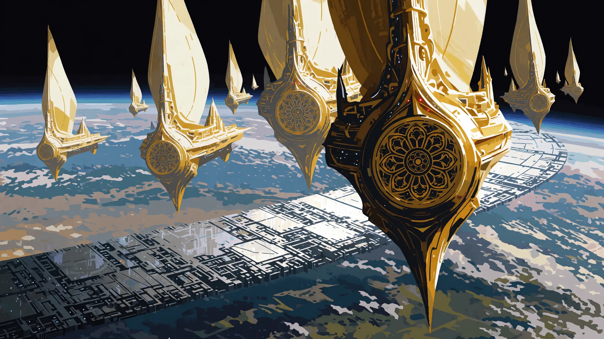
OLD ART · NOT THIS PLACEAPPROACH
SIRIUS A II. A manufactory running without customer, order or oversight, producing an army nobody has claimed for a war nobody declared.
 OLD ART · NOT THIS PLACE
OLD ART · NOT THIS PLACETHE GROUND
The casting halls have not stopped. They turn out identical units one after another under a star that never sets, and the canyon floor glows with it.
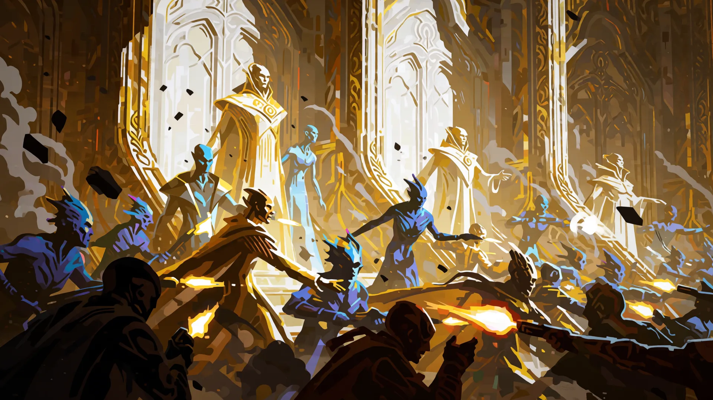
OLD ART · NOT THIS PLACETHE ASSAULT
Canyon batteries line the hall roofs, and pour gates can flood the whole floor with molten metal, which is a defence and also simply how the halls are emptied.
BATTLE
 OLD ART · NOT THIS PLACE
OLD ART · NOT THIS PLACEAFTERMATH
The halls are taken. The line did not stop while we took them. This is where the units in the Apophis fragments were cast, and nobody here has ever been told what for.
 OLD ART · NOT THIS PLACE
OLD ART · NOT THIS PLACENEW ORDER
The foundry is registered, and the Federation has recorded a production rate it has no mechanism to halt. That sentence is the entry.
OLD ART · NOT THIS PLACE
APPROACH
THE ASH FIELD. An archive standing in stellar debris, holding a record older than the Federation, kept by a power that has never once answered a query.
 OLD ART · NOT THIS PLACE
OLD ART · NOT THIS PLACETHE GROUND
This grey plain was the outer body of a star before the companion collapsed and threw it across the system. They stood their memory cores up in it like headstones.
OLD ART · NOT THIS PLACE
THE ASSAULT
Core row batteries cover the stacks and dust berms are banked between them, so every firing line is also a trench full of the ash of something that used to be a sun.
BATTLE
 OLD ART · NOT THIS PLACE
OLD ART · NOT THIS PLACEAFTERMATH
The stacks are toppled and cores lie open in the dust. Wardens are closing them by hand without reading them, under standing order.
 OLD ART · NOT THIS PLACE
OLD ART · NOT THIS PLACENEW ORDER
The field is graded, the stacks reset and every core sealed. The Federation has filed an archive it is forbidden to open. The order is ours.
OLD ART · NOT THIS PLACE
APPROACH
SIRIUS B I. A quarantine for the defective, operated by their makers, on a world nobody has inspected because nobody has ever been permitted to.
 OLD ART · NOT THIS PLACE
OLD ART · NOT THIS PLACETHE GROUND
They keep the ones that failed inspection here, in sealed white halls in orbit of a white dwarf. Every door locks from the outside and none has ever been opened from within.
OLD ART · NOT THIS PLACE
THE ASSAULT
Hall batteries cover the seals and containment shutters drop between every corridor, built to stop something getting out and now holding something back.
BATTLE
 OLD ART · NOT THIS PLACE
OLD ART · NOT THIS PLACEAFTERMATH
The seals are open and the halls are empty. Wardens report the cells were opened from the inside, which the architecture does not allow.
 OLD ART · NOT THIS PLACE
OLD ART · NOT THIS PLACENEW ORDER
The quarantine is registered as a closed site. The Federation has sealed a building whose occupants left before we arrived, and has filed it as secure.
OLD ART · NOT THIS PLACE
APPROACH
THE DIAMOND SHELF. A repair yard founded on a promise of geology, by a power that expects to outlast the promise. The Federation defers by decades. They defer by ages.
 OLD ART · NOT THIS PLACE
OLD ART · NOT THIS PLACETHE GROUND
The carbon under this shelf will turn to crystal one day, in an age nobody here will measure. They named the place for what it will be and built their repair yards on it.
OLD ART · NOT THIS PLACE
THE ASSAULT
Shelf batteries are anchored down into the carbon and the cradle clamps double as blast frames, because a thing built to hold a machine still while it is mended will hold it while it is shot at.
BATTLE
 OLD ART · NOT THIS PLACE
OLD ART · NOT THIS PLACEAFTERMATH
The shelf is ours and the cradles are broken open. There are units in them that were mid-repair and are now simply exposed.
 OLD ART · NOT THIS PLACE
OLD ART · NOT THIS PLACENEW ORDER
The shelf is registered and the yards restored. We have filed a place named for a future none of us will see, which is the most Federation thing in this system.
OLD ART · NOT THIS PLACE
APPROACH
THE COMPANION. A relay that has carried instruction to this entire system for an age, from an origin the Federation has never once identified.
 OLD ART · NOT THIS PLACE
OLD ART · NOT THIS PLACETHE GROUND
Every standing order in this system comes down that mast, and nobody at the yard knows where the orders come in. The white dwarf fills half the sky behind it.
OLD ART · NOT THIS PLACE
THE ASSAULT
Yard batteries ring the mast base and relay shutters can blind the whole line at once, which has never been done, because nothing has ever needed the line to stop.
BATTLE
 OLD ART · NOT THIS PLACE
OLD ART · NOT THIS PLACEAFTERMATH
The mast is down and the line is silent, and the machines are still receiving. Whatever speaks to them does not need the mast and never did.
 OLD ART · NOT THIS PLACE
OLD ART · NOT THIS PLACENEW ORDER
The mast is restored, and the Federation has repaired a chain of command it cannot trace to any commander. That sentence is entered in the registry exactly as it stands.
OLD ART · NOT THIS PLACE
APPROACH
THE DOG STAR. The origin of the standing orders. The Federation has petitioned this address for nine hundred years and has never once had a reply.
 OLD ART · NOT THIS PLACE
OLD ART · NOT THIS PLACETHE GROUND
This is the hall the orders come from. Tier upon tier of desks under the brightest star in the sky of Earth, every surface clean, and every one of them empty.
OLD ART · NOT THIS PLACE
THE ASSAULT
Hall batteries sit between the desk tiers and instruction gates seal each tier from the next, so taking this building means going down through it one floor of empty desks at a time.
BATTLE
 OLD ART · NOT THIS PLACE
OLD ART · NOT THIS PLACEAFTERMATH
The tiers are taken. Nine hundred years of petitions, and the hall we were petitioning has nobody in it and has had nobody in it.
 OLD ART · NOT THIS PLACE
OLD ART · NOT THIS PLACENEW ORDER
The hall is registered as the point of origin. The Federation has filed a correspondent that does not exist. Every petition remains on the record.
WHAT THIS ACT ISEarth at last, the world the Federation flagged in 1947 and deferred every year since, and the act where the deferral is finally traced to its source. Luna's relay chain runs upward through three seats above field command. The First Speaker is told, and does not reply.
WHEN THE ACT ENDSThe Voice traced the deferrals, the sealed pages, the rings that never open. They chain to three seats above field command. Someone in the upper rings is spending our light on something. It is not the worlds we ring. The First Speaker has been told.
WHAT THE PLAYER IS LEFT HOLDINGOrder is not obedience. Protection that has to be traced upward through three sealed seats was never protection, it was cover.
EARTH: whatever came out of the rock, and a great deal of it. Survive.
APPROACH
EARTH. Earth. Flagged for protection in 1947, deferred every year since, and we arrive eighty years late with the rock already broken over it.
THE GROUND
The fragments came down whole over the harbour district and split open in the streets. Whatever had been riding inside Apophis was already awake when it landed.
THE ASSAULT
The same intercept batteries that broke the rock are swung round now, depressed to fire along their own avenues, and every shelter door in the district is sealed from the inside.
BATTLE
AFTERMATH
The district holds. Wardens who have never set foot on this world are carrying its people out of buildings the Mandate was supposed to have ringed.
NEW ORDER
The city stands, and the opened hulls are left exactly where they fell with our seal posted beside them. The deferral is posted on the same board.
LUNA: abandoned depots on the far side, the Hungry already inside them, and then the Vigil wakes.
APPROACH
LUNA. The relay was flagged. Nineteen forty-seven. Deferred, and deferred, and deferred, and the whole harvest ran under that word.
THE GROUND
No signal from Earth has ever reached the far side. The relay dish sits half sunk in the regolith, and it was still warm when the first human crew found it.
THE ASSAULT
Hardpoints are buried in the basin rim and mass drivers run along the berms. Whoever built the dish built the guns as well, and did not build them for us.
BATTLE
AFTERMATH
The dish is down. We took it apart ourselves rather than let it be captured, and half the field command wanted it taken apart years ago.
NEW ORDER
The dish carries the ring. The Voice traced the relay chain to three seats above field command and the First Speaker has been told and has not replied.
MARS: the Hungry hold the trench, and the machines are working the same ground.
APPROACH
MARS. The second world these people settled, and the first they settled without asking anyone. We noted the presumption. We did not note the courage.
THE GROUND
They dug the habitat trench along the floor of Valles Marineris, four kilometres of cliff on either side, and once a season a dust storm closes the sky over it completely.
THE ASSAULT
Gun galleries are cut straight into the canyon walls and fire down onto the floor. Whoever built this trench expected to be outnumbered in it.
BATTLE
AFTERMATH
The galleries are silent. Firing down a canyon at a people who dug it themselves is not a thing the Mandate has liturgy for.
NEW ORDER
The trench stands under the ring, repaired now, the wall guns still pointed inward, which the Voice has entered in the record twice.
VENUS: a Federation station that has been in our sky the whole time.
APPROACH
VENUS. A city hung over an inferno, and its people were never once offered the ring that would have made it safe. Deferred, the file says. Three times.
THE GROUND
The city floats fifty kilometres up, moored to nothing, riding the one layer of this atmosphere that will not crush a hull. Nobody has ever stood on the ground below it.
THE ASSAULT
Gun blisters are set straight into the pressure hulls, and the mooring towers have been eaten half through by acid. Everything here is one bad seam away from falling for an hour.
BATTLE
AFTERMATH
The city holds. We fought the whole engagement inside a pressure envelope, because the alternative was a mercy that ended fifty kilometres down.
NEW ORDER
The sky flies under the Mandate. The Warden asks which of the forty registries this makes forty-one, and nobody in the upper rings will answer him.
MERCURY: the machines are already here, in numbers, around the ring.
APPROACH
MERCURY. An installation the Federation never surveyed, on a world the Federation ruled uninhabitable and therefore uninteresting.
THE GROUND
Nothing survives the day side, so everything here is built in the terminator or under it. The iron core of this world is the largest in the solar system for its size, and somebody wound it.
THE ASSAULT
Sun-side batteries that run on more power than they can spend, and shutter walls that close ahead of the terminator as it crawls around the planet.
BATTLE
AFTERMATH
The basin is held. The ring beneath it is maker-format and it predates every registry we keep. We have been filing this system for eight hundred years and never once looked down.
NEW ORDER
The basin enters the registry with its ring described honestly, which means describing what we did not know. The Chorus insisted on that second part.
JUPITER: a Federation anchorage, and the machines raid it while we are taking it.
APPROACH
JUPITER. A gas world with no ground and an unregistered anchorage riding its storms. None of this is in the survey either.
THE GROUND
There is no ground here at all. The anchorage rides the cloud decks between storm bands, tethered to nothing, and the radiation would kill an unshielded crew inside an hour.
THE ASSAULT
Storm-band batteries slung under the anchorage hulls, and mag-shields holding the radiation off that must never be dropped, which is exactly what makes them worth shooting at.
BATTLE
AFTERMATH
The anchorage is held and its traffic logs are open. Every route terminates at Saturn. The Federation has ringed this system for centuries and never asked what is under those rings.
NEW ORDER
The anchorage is entered, and so is the omission. Two outer worlds are broadcasting an interdiction the Mandate did not authorise and cannot switch off.
SATURN: the Hungry seat and their commander. The scavengers hit it at the same time, for the door.
APPROACH
SATURN. The interdiction is down, and the Mandate is finally looking at the thing it has ringed for eight centuries without once inspecting.
THE GROUND
The rings throw a shadow across the whole approach, and at the north pole a six-sided storm has been turning in the same place for as long as anyone has had a lens to point at it. It is not weather. Nothing else in the sky has corners.
THE ASSAULT
Ring-shadow batteries firing up through the gaps, and the hexagon itself, which is a standing wave with six faces and will take a ship apart if it closes while you are inside it.
BATTLE
AFTERMATH
The hexagon is held. It is an aperture, and the Federation has spent the whole of recorded history filing what came through it as unexplained.
NEW ORDER
The hexagon is registered as a transit aperture. Every unexplained arrival in eight hundred years now has a mechanism, and every one of those entries was signed off by somebody.